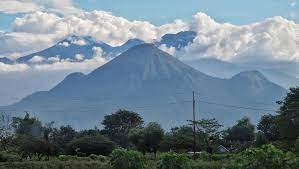

Anak Alam
jaga selalu kesehatan Alam
|

Gunung ArjunoPGunung Arjuno (terkadang dieja Gunung Arjuna) adalah sebuah gunung berapi kerucut (istirahat) di Jawa Timur, Indonesia dengan ketinggian 3.339 m dpl. Gunung Arjuno secara administratif terletak di perbatasan Kota Batu, Kabupaten Malang, dan Kabupaten Pasuruan dan berada di bawah pengelolaan Taman Hutan Raya Raden Soerjo. Gunung Arjuno merupakan gunung tertinggi kedua di Jawa Timur setelah Gunung Semeru, serta menjadi yang tertinggi keempat di Pulau Jawa. Biasanya gunung ini dicapai dari tiga titik pendakian yang cukup dikenal yaitu dari Lawang, Tretes dan Batu. Nama Arjuno berasal dari salah satu tokoh pewayangan Mahabharata, Arjuna. |
.jpg)
Gunung BromoGunung Bromo atau dalam bahasa Tengger dieja "Brama", juga disebut Kaldera Tengger, adalah sebuah gunung berapi aktif di Jawa Timur, Indonesia. Gunung ini memiliki ketinggian 2.329 meter di atas permukaan laut dan berada dalam empat wilayah kabupaten, yakni Kabupaten Probolinggo, Kabupaten Pasuruan, Kabupaten Lumajang, dan Kabupaten Malang. Gunung Bromo terkenal sebagai objek wisata utama di Jawa Timur. Sebagai sebuah objek wisata, Bromo menjadi menarik karena statusnya sebagai gunung berapi yang masih aktif. Gunung Bromo termasuk dalam kawasan Taman Nasional Bromo Tengger Semeru. |
.jpg)
Gunung SemeruGunung Semeru atau Gunung Meru adalah sebuah gunung berapi kerucut di Jawa Timur, Indonesia. Gunung Semeru merupakan gunung tertinggi di Pulau Jawa, dengan puncaknya Mahameru, 3.676 meter dari permukaan laut (mdpl). Gunung ini terbentuk akibat subduksi Lempeng Indo-Australia kebawah Lempeng Eurasia. Gunung Semeru juga merupakan gunung berapi tertinggi ketiga di Indonesia setelah Gunung Kerinci di Sumatra dan Gunung Rinjani di Nusa Tenggara Barat.[2] Kawah di puncak Gunung Semeru dikenal dengan nama Jonggring Saloko |